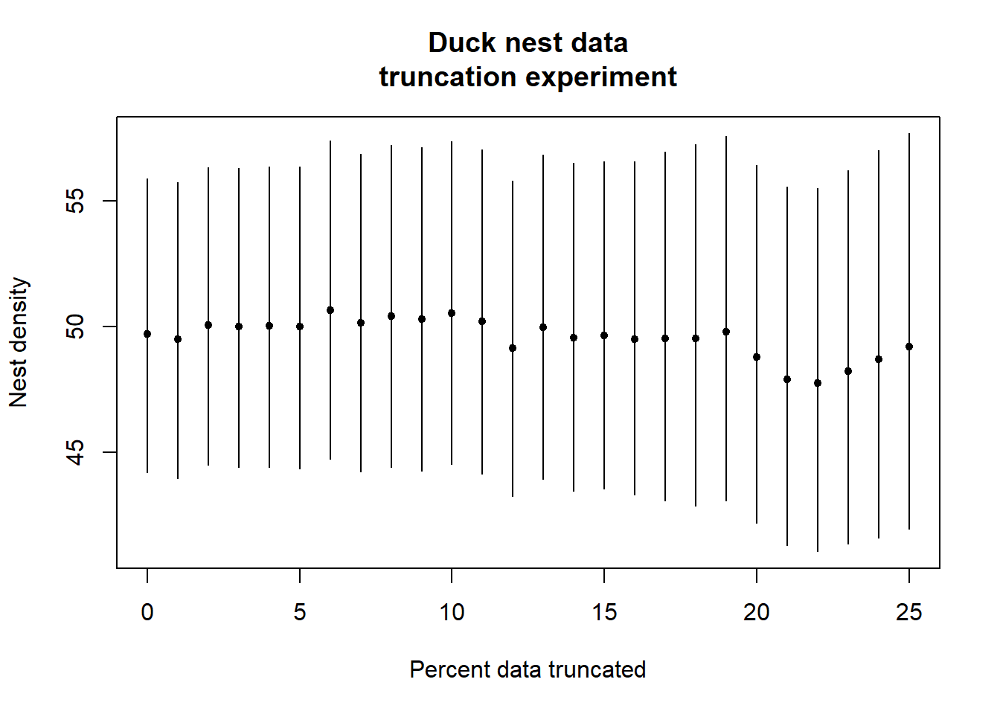
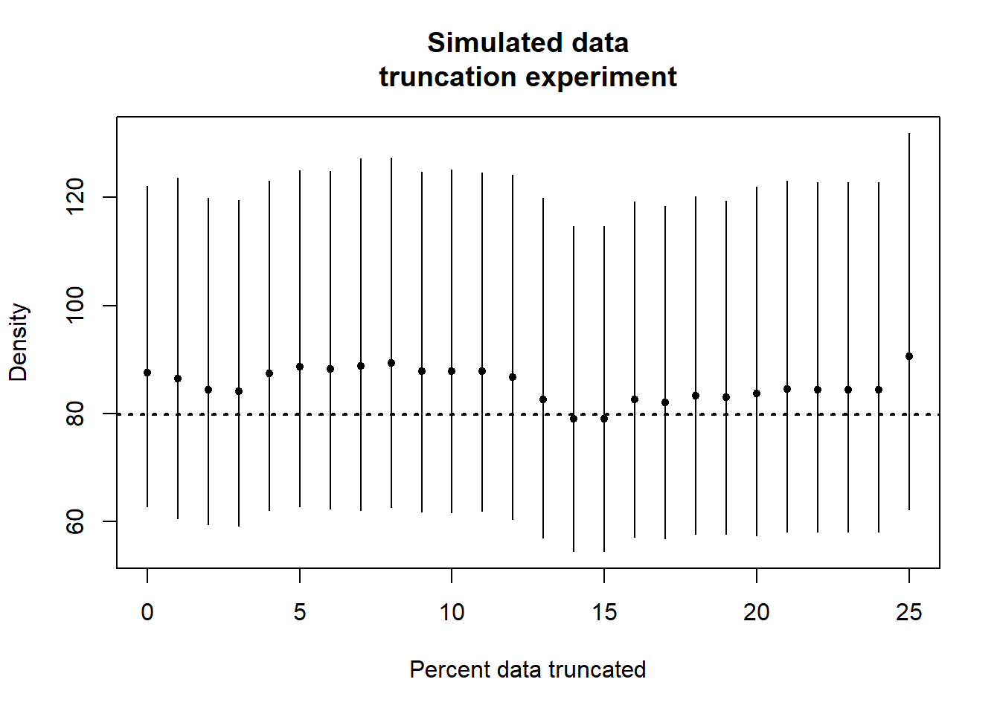

trunc.experiment <- function(mydata, trunc.range=0:25, cu, type="line") {
result <- data.frame(est=numeric(), lcl=numeric(), ucl=numeric())
for (i in seq_along(trunc.range)) {
this <- paste0(i-1,"%")
m <- ds(mydata, key = "hn", adj = NULL, convert_units = cu, transect = type, truncation = this)
result[i, ] <- m$dht$individuals$D[c(2,5,6)]
}
return(result)
}Effect of truncation upon density estimates
How much truncation?
This question arose in our discussion of truncation. The truncation decision is one of the first decisions an analyst will make when performing a distance sampling analysis. Is the truncation decision a decision that has profound consequences and therefore deserve lots of thought (answer: probably not). Let’s see
I have written a function that simply repeatedly calls ds() to fit a detection function to a data set. Within the function is a for() loop containing the call to ds(). After each call to ds() the results of the fitted model object are stored within a data frame for subsequent plotting. The function retains the point estimate of density and the confidence interval bounds of the estimate.
The function
Is presented here
Apply the function
How does increasing amounts of truncation affect density estimates in the duck nest data set? I present a range of truncation (in percent) from 0 (no truncation) to 25% (a quarter of the data set). Given there are 534 detections in this data set, every percent of truncation removes ~5 detections. What are the results?
library(Distance)
data("ducknest")
cu <- convert_units("meter", "kilometer", "square kilometer")
duck.trunc <- trunc.experiment(mydata=ducknest, trunc.range=0:25, cu=cu, type="line")Duck nest result
The figure below shows there is very little change in point estimates of duck nest density until ~20% (1/5th) of the data have been truncated. The magnitude of the point estimate changes are minute in comparison to the width of the confidence intervals.
trange <- 1:26
plot(trange-1, duck.trunc$est, type="p",
ylim=range(c(duck.trunc[,2], duck.trunc[,3])), pch=20,
main="Duck nest data\ntruncation experiment", ylab="Nest density",
xlab="Percent data truncated")
segments(trange[trange]-1, duck.trunc[trange,2], trange[trange]-1, duck.trunc[trange,3])
Simulated line transect result
The value of writing functions is they can be re-used if written with sufficient generality. I re-use the truncation function upon a different data set; the simulated data from Practical 3 where the true density is known to be 79.8 animals per hectare (depicted with horizontal dashed line).
data("LTExercise")
sim.trunc <- trunc.experiment(mydata=LTExercise, trunc.range=0:25, cu=cu, type="line")plot(trange-1, sim.trunc$est, type="p",
ylim=range(c(sim.trunc[,2], sim.trunc[,3])), pch=20,
main="Simulated data\ntruncation experiment", ylab="Density",
xlab="Percent data truncated")
segments(trange[trange]-1, sim.trunc[trange,2], trange[trange]-1, sim.trunc[trange,3])
abline(h=79.8, lwd=2, lty=3)
Conclusion
Truncation distance has a small effect upon density estimates for “reasonable” data. If number of detections is small (<50) the effects can be more profound. But under normal circumstances there is little need to worry greatly about the truncation distance decision. Recall truncation is done to reduce the likelihood of fitting overly-complex models with several adjustment terms to fit “noise” resulting from low probability detections made at great distances.
The examples presented here are for surveys with exact distance measurements. For surveys where distances are binned in the field, truncation can only happen on the cutpoints.